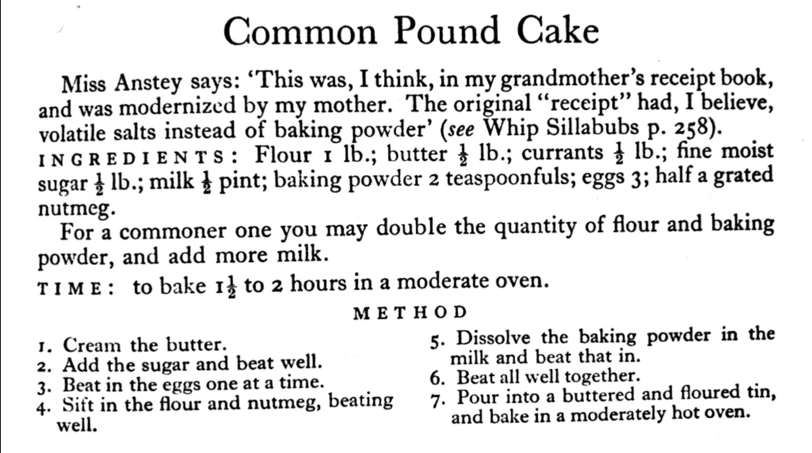

The Rise of Algorithms: Are They Taking Over?
An Original Recipe for Change 🔮 Algorithms silently guide our daily decisions, influencing and forming the world we live in. From the stock market to medicine, from music to national security, algorithms are becoming more sophisticated and prevalent every day. But what exactly are algorithms, and should we worry about their increasing dominance in our lives? Do we even know where they came from? In order to understand where we’re going, we have to know where we’ve been. Algorithmic Beginning
An Original Recipe for Change 🔮
TechnologyThe applied tools, systems, and infrastructure through which scientific knowledge is put to practical use.In the Lexicon →Algorithms silently guide our daily decisions, influencing and forming the world we live in. From the stock market to medicine, from music to national security, algorithms are becoming more sophisticated and prevalent every day. But what exactly are algorithms, and should we worry about their increasing dominance in our lives? Do we even know where they came from? In order to understand where we’re going, we have to know where we’ve been.
Algorithmic Beginnings
The term "algorithm" comes from the name of the Persian mathematician and scholar, Muhammad ibn Musa al-Khwarizmi. He was a director at the House of Wisdom and had meaningful impact on mathematics, astronomy, geography, and cartography. He introduced Hindu-Arabic numerals to the West and contributed to maths by showing how complex problems could be broken down into simpler parts and solved. This paved the way for the computer age, as the principles of algorithms became the foundation for modern computing.
AIArtificial IntelligenceIn the Lexicon →Algorithms are sets of instructions computers use to solve problems. They take in data, process it, and produce output. If we were talking analogies, the easiest would be a recipe. Given certain variables, an order in which to attempt each outlined step, and with an intended outcome of baking a Common Pound Cake should be a snap!
Our basic algorithm for baking a cake would be:
1. Preheat oven and prepare baking tray.
2. Prepare and mix ingredients.
3. Place tray in oven and bake cake.To make our process more detailed, we'll use the recipe approach: outline the basic steps, then add additional information for precision.
1. Cream the butter.
2. Add the sugar and beat well.
3. Beat in the eggs one at a time.
4. Sift in the flour and nutmeg, beating well.
5. Dissolve the baking powder in the milk and beat that in.
6. Beat all well together.
7. Pour into buttered and floured tin, and bake in a moderately hot oven. What’s a moderately hot oven? We’ll get to that, but now that we have a good “algorithm”, what can be done to enhance it and make it better? We can expand the steps and get granular in steps that are considered common baking knowledge. Let us focus on creaming the butter for now (the first step).
Is butter at room temperature?
- Yes – “cream the butter”
- No – “warm butter to soften”
Next we can expand upon adding the eggs to the creamed butter-sugar mixture.
- Add eggs one at a time.
- Beat until smooth.
We can also add some instructions for preparing the baking tin, and oven.
- Grease tin by buttering and flouring it.
- Turn on the oven and allow to heat to moderately hot.
Let’s adjust the algorithm to include some of the finer details and temperatures.
1. Preparation for baking:
- butter the tin and add flouring.
- pre-heat the oven to (350F).
2. Is the butter at room temperature?
- Yes — cream the butter.
- No — warm butter to soften.
3. Add sugar and beat well.
4. Add eggs, one at a time.
- beat until smooth and mixed well.
5. Sift in the flour and nutmeg; mixing well.
6. Dissolve baking powder in milk and mix that in.
7. Pour into buttered & floured tin, and bake for 1 1/2 to 2 hours.Recipes lack precision and reproducibility. An algorithm is designed to be precise with the current hardware, ensuring that its implementations in different languages and the same language yield identical outcomes.
Take "a cup of flour". The recipe doesn't say how hard you should pack the flour into the cup. It doesn't specify the moisture content. Unsure of the precise amounts of flour, starch, protein, and fibre?1 It may not matter, as the dish often turns out equally delicious. But does it?
An algorithm is a procedure for solving a problem2,3,4,5,6,7. Many fields, like mathematics, computer science, physics, and biology, use it frequently6.
Algorithms use AI and ML to analyze data and improve results. Robots can make decisions and adjust to changing environments autonomously. A computer can use an algorithm to rapidly arrange a list of numbers in increasing order. It can also find the most efficient route between two locations.
A simple algorithm is as follows:
- Input and output should be defined precisely.
- The algorithm must include clear, unambiguous steps.
- Algorithms should be the most efficient solution to a problem.
- An algorithm shouldn't include computer code.
- The algorithm should be designed to be compatible with various programming languages.
There are many types of algorithms, including2 :

Computer programming calls an algorithm a set of well-defined instructions to solve a particular problem. An algorithm takes input(s) to create the desired output1 . For instance, to add two numbers, two number inputs are inputted, added using the + operator, and the result is displayed.
Algorithms' complexity depends on the desired results. For example, a recipe can illustrate how algorithms work. To cook an original recipe, one reads the instructions and steps and executes them one by one, in the given sequence. This process results in a perfectly cooked dish.
Algorithms Are Everywhere
Algorithms pervade our daily existence, often invisibly. Examples of everywhere include2,6:
- Social media: Algorithms control which posts appear on our feeds, which ads we get, and the posts that are suggested to us.
- Online shopping: Algorithms suggest products based on our browsing and purchase history.
- Navigation: Algorithms help us find the most efficient route to our destination and estimate arrival times.
- Entertainment: Algorithms recommend movies, TV shows, and music based on our viewing and listening history.
- Healthcare: Algorithms help doctors diagnose diseases and suggest treatments.
- Employment: Algorithms are used in hiring processes to screen resumes and select candidates.
- Transportation: Algorithms control traffic signals and optimize public transportation schedules.
- Education: Online learning platforms employ algorithms to tailor learning experiences to individual student needs.
Algorithms offer many benefits in terms of efficiency gains, however, they can also prove to be problematic. They can perpetuate bias, create filter bubbles, and take significant decisions out of the hands of human1 . It is imperative to know how algorithms impact our lives and think critically about their use.
The Good: How Algorithms Change the World
Algorithms are neither beneficial nor detrimental in themselves but rather depend on their usage. They can have a positive effect on the world when utilized correctly. For example:
- Algorithms in medicine can improve patient outcomes and reduce costs by allowing for tailored treatment plans based on individual data.
- Transportation algorithms optimize traffic flow and reduce congestion. This can save time and reduce pollution.
- Algorithms are used in education to create adaptive learning systems that customize instruction for each student. This can enhance student achievement and close educational disparities.
The Bad: How Algorithms Can Go Wrong
However, algorithms can also go wrong in many ways. For example:
- Finance algorithms have been blamed for the 2010 "flash crash" and other market disruptions. Algorithms can have devastating effects on the stock market, resulting in swift losses of investor capital.
- Algorithms deployed in criminal justice systems have been criticized for propagating racial inequity by influencing decision-making around bail, sentencing, and parole — supposedly by predicting recidivism.
- Social media algorithms personalize news feeds and recommend content to users. However, these algorithms can also create "filter bubbles" where users only see content confirming their beliefs, leading to polarization and division.

The Future of Beneficial Algorithms
Algorithms are not slowing down. As technology progresses, more robust algorithms will become common. We can influence this future to ensure that algorithms are used for humankind's benefit. Below are strategies to accomplish this:
- Transparency and accountability: Companies and governments must make clear their algorithms and data, and must answer for any algorithmic outcomes that impact individuals' lives.
- Diversity and inclusion: Diversity and inclusion in tech will lead to more equitable algorithms. Without it, algorithms will reflect their creators' biases - a narrow set of backgrounds.
- Education and awareness: People should be informed about algorithms' impact on their lives, both positive and negative. Schools and public outreach programs can help spread this knowledge.
- Ethical guidelines: Companies and organizations must create ethical principles for developing and operating algorithms, assessing potential harm, fairness, and privacy. These principles must be periodically evaluated and amended as required.
- Independent audits and assessments: Third-party organizations could review algorithms for compliance with ethical guidelines, overall efficiency, and potential biases or discrimination.
- Laws and regulations: Governments should create and enforce laws that safeguard people from the adverse effects of algorithms, e.g. bias and privacy infringements. These laws should be adjustable to accommodate evolving technology, while powerful enough to enable companies and individuals to be held responsible for their actions.
- Collaboration between stakeholders: Algorithms impact a wide variety of sectors and people. Tech companies, governments, users, and communities must work together to ensure beneficial outcomes. This entails public consultation, partnership building, interdisciplinary research, and collaboration between different sectors.
- Promoting fairness and equality: Algorithms should be created to ensure fairness and equality, to avoid unintentionally discriminating against certain demographics. For instance, loan application algorithms should include fairness metrics to prevent bias by race, gender, or socioeconomic status.
- Involving affected communities: Involve community representatives or members in the design and decision-making of algorithms affecting them. This ensures that their perspectives and concerns are taken into account, helping to create more inclusive and equitable algorithms.
- Encouraging transparency in research: Encouraging academic researchers and industry professionals to share their findings and methodologies in a transparent manner can promote trust and allow for increased scrutiny and refinement of algorithms. Doing so can also help develop best practices and industry standards.

Token Wisdom
Algorithms alone cannot solve global problems; they are only part of a larger toolkit. Algorithms utilized in generative processes can be described as "reasoning engines," however, the interpretability and explainability of algorithms still require tremendous study and research. Algorithms are effective, but we must be willing to consider other solutions when they are more suitable. While algorithms are neither good nor bad in and of themselves, it is possible to misuse them or create unforeseen consequences. As long as they are explainable, we have a path forward in understanding the reasoning.